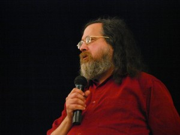

Siempre es bueno escuchar a Richard
El jueves después de trabajo, salimos César, Ceci, Mariano y yo hacia la ciudad de Rosario. Como se había anunciado, Richard Stallman, el padre del Software Libre y líder del proyecto GNU daría una charla abierta a las 19 en un auditorio del Politécnico de Rosario.
{kind=link}
Recién cuando estaba manejando, caí en la cuenta de que la última y única vez que había oído hablar a RMS había sido 10 años atrás. Escribí por ese entonces:
...1º Jornada nacional de GNU/Linux, del 4 al 6 de Agosto de 2000, organizado por el LUGRo (Linux User Group de Rosario). Fue el primer gran evento del software libre y Linux realizado en nuestro país. La verdad es que estuvo muy buena, buena organización, puntualidad, espacio suficiente para que los concurrentes disfruten de un evento de esta envergadura, Y sin duda lo mejor de toda la jornada fue la presencia "estelar" de Richad M. Stallman (RMS)...
Tenía 15 años y solo un par de meses antes me había enterado qué existía otro sistema operativo, leído sobre las 4 libertades del software y escuchado sobre las personas que trabajaban en esta comunidad. Dos meses después de haber conocido esto, el hombre que había iniciado el movimiento venía a mi país, a menos de 200 km de mi casa a presentar sus ideas: no me lo quería perder.
Así fue que con un amigo viajamos a Rosario, nos instalamos en la casa de sus tías y participamos del primer gran evento de Software Libre de latinoamérica, no teníamos ni idea de dónde estábamos, no teníamos ni idea de como usar Bash y apenas habíamos intentado instalar alguna distribución, a riesgo de quemar el monitor. Sin embargo, fue una gran decisión: conocí personas con la que me relaciono aún hoy, me motivó para seguir aprendiendo y me permitió formar parte de un movimiento de escala mundial sin precedentes.
{kind=link}
10 años después volvió a Rosario.
El día jueves 15 comenzó con la visita al rector de la UNR, el señor Darío Maiorana, quién se entrevisto con Richard en una charla de 45 minutos, si bien la misma estaba pactada para solo 5. En dicha charla, Maiorana se intereso por la utilización de Software Libre en la educación y acepto la sugerencia de ir adoptándolo en todas las facultades de la UNR. Luego de esta entrevista, Richard estuvo ante periodistas en una conferencia de prensa donde fue bombardeado con preguntas de todo tipo las cuales fueron contestadas puntualmente y sin ambigüedad. Por la tarde, fue recibido por el Intendente de Rosario, el señor Miguel Lifschitz. En la entrevista que mantuvieron Lifschitz le comento a Richard sobre los esfuerzos realizados por la Municipalidad para adoptar el uso de Software Libre en la administración pública. Al mismo tiempo, Richard le pidió al intendente que se publiquen en los sitios web de la municipalidad y las dependencias de la misma, un mensaje de que se utiliza Software Libre para el desarrollo y funcionamiento del sitio. Al final la charla se le entrego al intendente una copia del libro “Voto Electrónico, Los riesgos de una ilusión” Más tarde, a las 19, se realizo la charla libre y gratuita en el auditorio de la Facultad de Ciencias Exactas, Ingeniería y Agrimensura donde 600 personas estuvieron presentes ante un discurso magistral sobre la filosofía libre. La respuesta del público fue muy buena y el evento termino con una larga cola de personas que quisieron inmortalizar su presencia junto a Stallman en fotos que serán publicadas en el sitio del LUGRo. El día viernes por la mañana se realizo una reunión en el Concejo Municipal de la Ciudad de Rosario donde se entrevisto con su presidente, Miguel Zamarini, el concejal Jorge Boasso y varias autoridades y concejales. Hubo especial interés de los concejales sobre la temática y Richard pudo explicar varios puntos importantes como la necesidad de utilizar Software Libre en la educación y el estado. También charlo con los concejales sobre los peligros de la utilización de sistemas electrónicos en los procesos de votación. Fuente: LUGRo
{kind=link}
{kind=link}
Una de las primeras cosas que leí escritas por RMS fue El Derecho a Leer, un cuento corto de ciencia ficción en el que se previene de un posible futuro y se ve la importancia del Software Libre en una sociedad. Si no lo leiste, te invito a hacerlo.
Comentarios
Comments powered by Disqus